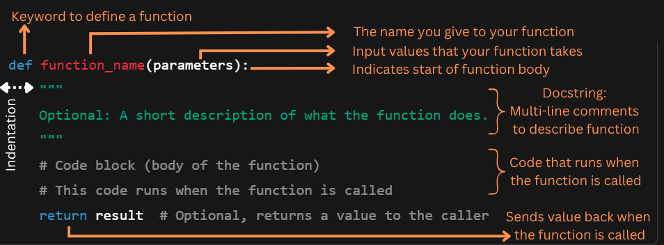

Show code cell source
import sys
import os
sys.path.insert(0, os.path.abspath(os.path.join(os.getcwd(), '..', 'shared')))
import setup_code
stroke_data = setup_code.stroke_data
Module 6a: Function Basics#
- Understand the building blocks of a function.
- Learn how to define and call a function to execute its code.
Why write a function?#
Reuse code easily:
As you start coding and analyzing data in Python, you’ll soon realize that some code snippets are repeated and can be reused. Instead of copying and pasting the same code again and again, you write it once as a function and use it whenever you need. This saves time and effort!
Make your code cleaner and shorter:
Functions help break big problems into smaller, manageable pieces. This makes your code easier to read and understand. We often talk about avoiding ‘spaghetti code’. Just as it sounds, this describes code that is unclear, a big tangled mess that’s tough to read, understand, and work with,—kind of like a bowl of spaghetti all mixed up.
Avoid mistakes:
When you reuse the same function, you only need to test and fix the code once. This reduces errors compared to copying code multiple times.
Organize your work:
Functions let you give a name to a block of code, which describes what it does. This helps others (and future you!) understand your program faster.
Anatomy of a Function#
So what are the building blocks of a function? What elements do we need for Python to understand that we’re defining a function?
Let’s take a look at the syntax needed:
As you can see, a function requires parameters to define the type and number of values that it can accept [GeeksforGeeks, n.d.]. These parameters are placeholders for the actual data you want to pass when you call the function. If your function were a vending machine, then the parameters are the buttons you press to choose what comes out.
Note
You only need to define a function once, then you can use (call) it as many times as you like.
Let’s use the Kaggle stroke data [fedesoriano, 2021] to write our first function. The stroke variable is binary: 1 indicates that the patient had a stroke, and 0 indicates the absence of a stroke. We can then determine the number of patients who had a stroke by calculating the sum of this column through the following function:
stroke_data = setup_code.stroke_data
def count_stroke_patients(df):
"""
Return the number of patients in the dataset who had a stroke.
Parameters
----------
df : pandas.DataFrame
The dataset containing patient information. Must include a 'stroke' column
with binary values (e.g., 0 = no stroke, 1 = stroke).
Returns
-------
int
The number of patients who had a stroke.
"""
stroke_count = df['stroke'].sum()
return stroke_count
To call the function, we use the syntax function_name(arguments).
count_stroke_patients(stroke_data)
np.int64(249)
The Pass Statement: A Placeholder for Code#
Sometimes, when writing functions, classes, or loops, you know what you want to build — but not how just yet. You can use a pass statement as a placeholder to build your code and test it without any issue.
What does pass do?#
The pass statement tells Python:
“Do nothing here, but don’t crash.”
It’s useful when you’re outlining code and want to avoid errors while the logic is still incomplete.
Suppose you’re planning to write a function that will analyze the relationship between smoking status and stroke, but you’re not ready to write the actual logic yet.
def count_smokers_by_category(df):
pass # We'll implement this later in the quick practice
You can call this function, and Python won’t complain — it just won’t do anything yet.
pass in Conditionals#
You might also check if the smoking_status column exists, but want to fill in the logic later:
if 'smoking_status' in stroke_data.columns:
pass # analysis will go here
else:
print("Column 'smoking_status' not found.")
This code runs without error, even though the if block is empty for now.
What happens if we remove pass?#
def count_smokers_by_category(df):
# nothing here!
Cell In[7], line 2
# nothing here!
^
_IncompleteInputError: incomplete input
If you remove the pass statement, you’ll be faced with an IndentationError, because Python expects at least one statement in a function.
Mini-Exercice#
Complete the function below to:
Check if the ‘smoking_status’ column exists
If yes, return a pandas Series with counts of each smoking category using .value_counts()
If no, return a message saying the column isn’t found.
The pass statement is a placeholder you can replace with real code when you’re ready. You can call the function to see if it works!
def count_smokers_by_category(df):
if 'smoking_status' in df.columns:
pass
### TO DO: REPLACE PASS WITH YOUR CODE ###
else:
pass
### TO DO: REPLACE PASS WITH YOUR CODE ###
Solution
def count_smokers_by_category(df):
if 'smoking_status' in df.columns:
return df['smoking_status'].value_counts()
else:
return "Column 'smoking_status' not found."